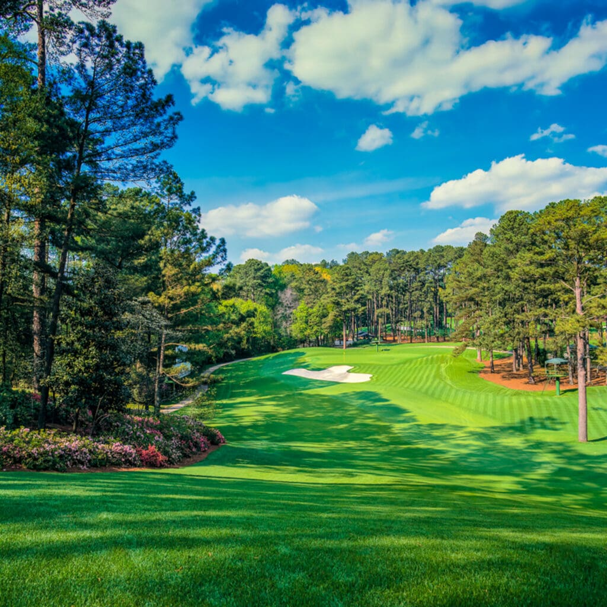
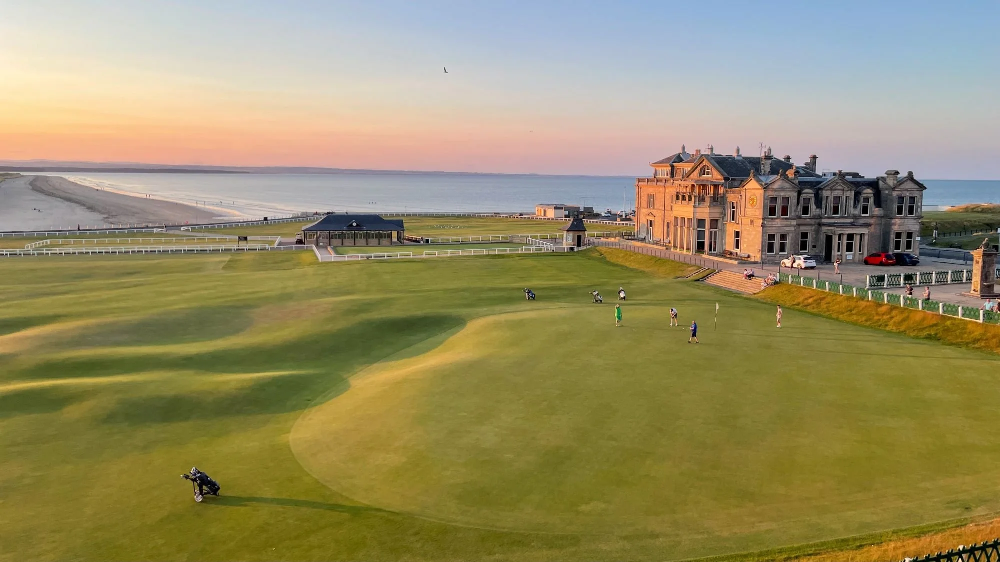

Top Golf Courses & Difficulty Guide

Welcome to my golf course guide! Here you will find information about famous golf courses around the world, their difficulty levels, and what makes each layout unique.
Featured Courses & Difficulty Ratings
- Pebble Beach Golf Links: Hard — Famous for coastal ocean winds, narrow fairways, and small greens.
- Augusta National: Very Hard — Known for fast undulating greens and steep elevation changes.
- St Andrews (Old Course): Medium/Hard — Classic Scottish links golf featuring massive pot bunkers.
Course Spotlights
Augusta National Golf Club

Augusta National is famous for its lush, immaculate landscape, dramatic elevation changes, and extremely fast greens that test the world's top golfers during The Masters.
St Andrews Old Course

Known worldwide as the 'Home of Golf', St Andrews features double greens, deep pot bunkers, and unpredictable Scottish coastal winds that make every round challenging.
Explore More Golf Resources
Check out these official sites to explore scores, tournament schedules, and course details: